Destinos
-
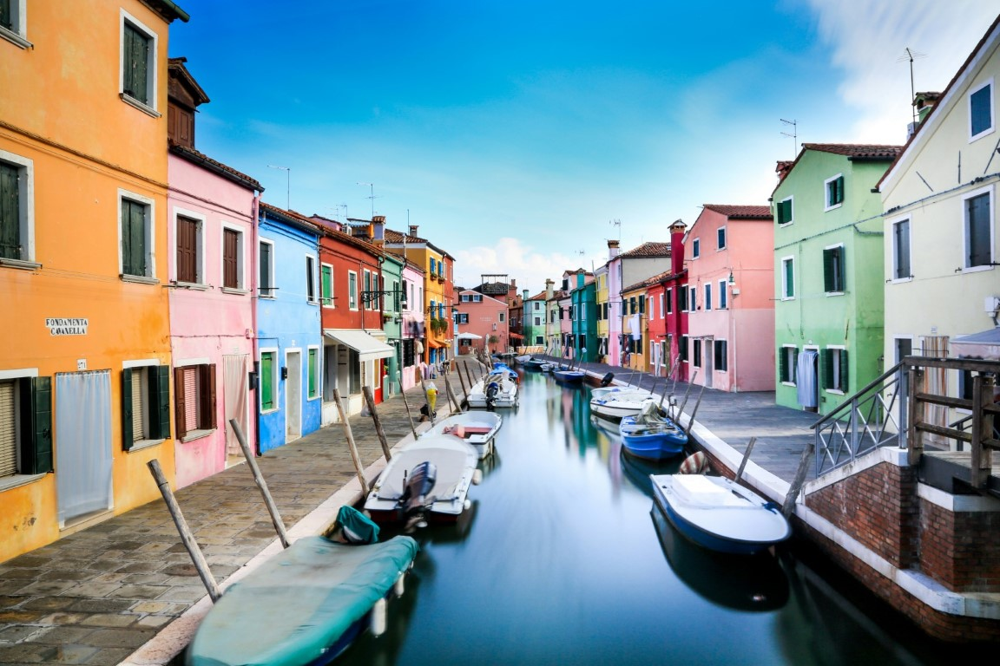

Para muchos, Venecia es la ciudad más bella del mundo. Tiene un encanto antiguo y estremecedor que, al día de hoy, se encuentra entre las capitales mundiales de arte contemporáneo.
Inmortal y misteriosa, el alma de Venecia está formada por 118 islas unidas por más de 400 puentes separados por canales que hacen las veces de carreteras marítimas, continuamente recorridas por góndolas y barcos en un constante ir y venir. Decir que abunda en tesoros artísticos es incluso irreverente: su encanto romántico e historia son absolutamente únicos. -
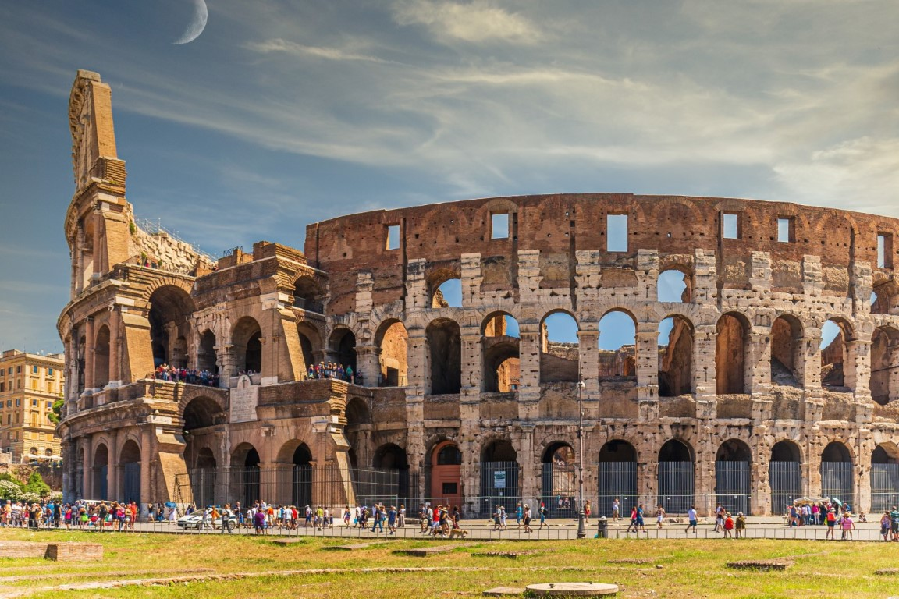
Que tiene sus años, sí, pero los lleva bien: después de todo, Roma es la Ciudad Eterna.
Caminar por las calles de Roma es caminar por la Historia. Se trata de uno de los destinos turísticos más populares del mundo, que permite, por no decir que impone, incesantes descubrimientos, gracias a la inmensidad de su patrimonio artístico. De hecho, alberga dos capitales en una sola ciudad: la capital italiana y la sede del Papa en el Vaticano, destino de peregrinación universal en la Piazza San Pietro. -
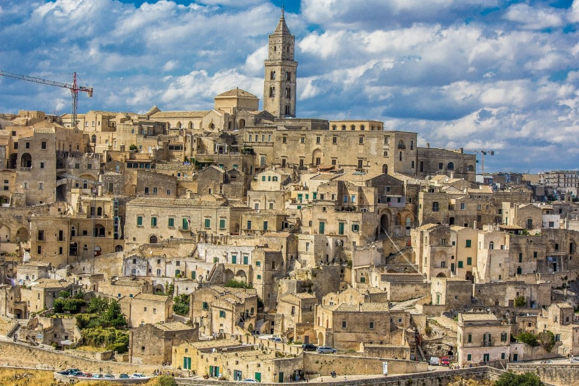
Basilicata, una región de orígenes antiguos, suspendida entre dos mares y con montañas de gran belleza.
Basilicata es una región donde el paso del hombre ha dejado importantes huellas desde la prehistoria. Con el antiguo nombre de "Lucania", está enriquecida por un increíble patrimonio artístico. Por no hablar de su panorama nunca aburrido, que va desde las Dolomitas lucanas hasta el Parque del Pollino, pasando por dos mares. -

18 kilómetros de costa entre rutas de senderismo, calas escondidas y escenarios mágicos.
Situadas en un escarpado tramo de costa de la Riviera Ligure de Levante, entre Punta Mesco y Punta di Montenero, desde el siglo XVI las Cinque Terre han vinculado su fortuna a la República de Génova, que transformó los pequeños asentamientos agrícolas de Monterosso al Mare, Vernazza, Corniglia, Manarola y Riomaggiore en pueblos marítimos.
Enclavados en 18 kilómetros de costa, los cinco pueblos siguen siendo de difícil acceso, salvo por ferrocarril. Destino ideal para los amantes del senderismo, destacan las rutas del Sentiero Azzurro, Monte Vè y Focone, que aún conservan vestigios del pasado rural de la zona.
Dominadas por una cadena montañosa paralela al litoral, son famosas por su belleza natural y, en particular, por sus playas, llenas de bahías y calas.
En Fegina, la parte nueva de Monterosso, la arena es a veces guijarrosa, a veces más fina, intercalada con escollos llamativos, como Mapassu o Quarto. Aquí encontrarás una de las veinticinco playas más sexys del mundo, según la revista estadounidense Forbes.
Declarada Patrimonio de la Humanidad por la UNESCO en 1997, la zona cuenta también con numerosos lugares de interés para los aficionados al submarinismo, que en Franata di Corniglia pueden presenciar un auténtico milagro de la naturaleza, entre meros, morenas, congrios, langostas, damiselas y esponjas. -
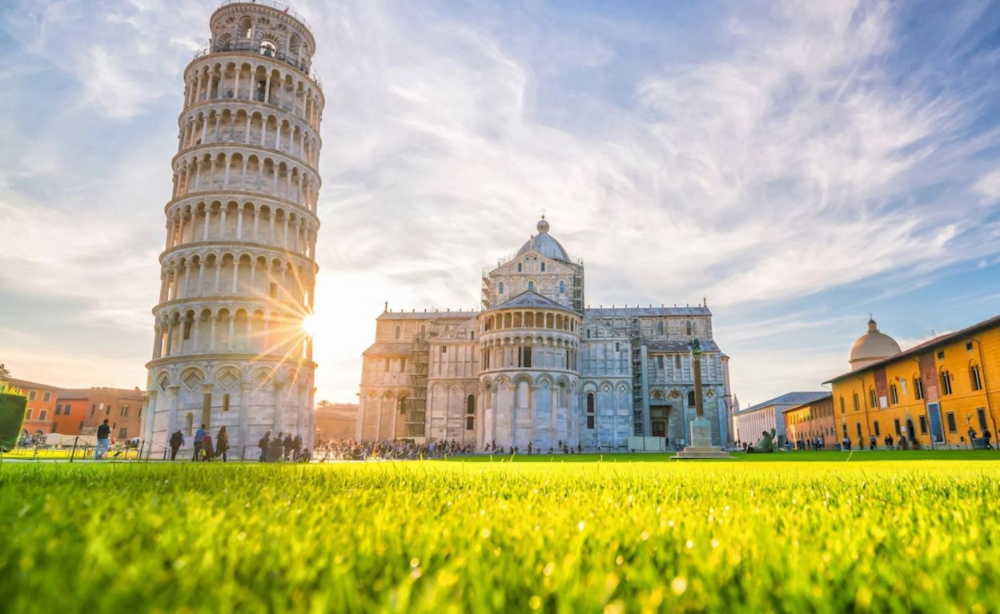
Pisa, la rica ciudad de los "Milagros" con la torre inclinada, conserva el encanto de la antigua República Marítima.
Pisa es un maravilloso destino turístico en el centro de la Toscana, un museo al aire libre y una ciudad viva, llena de eventos y repleta de estudiantes que acuden a la Normale di Pisa. Su rica gastronomía y sus numerosos monumentos históricos invitan a redescubrirla con todos los sentidos. -
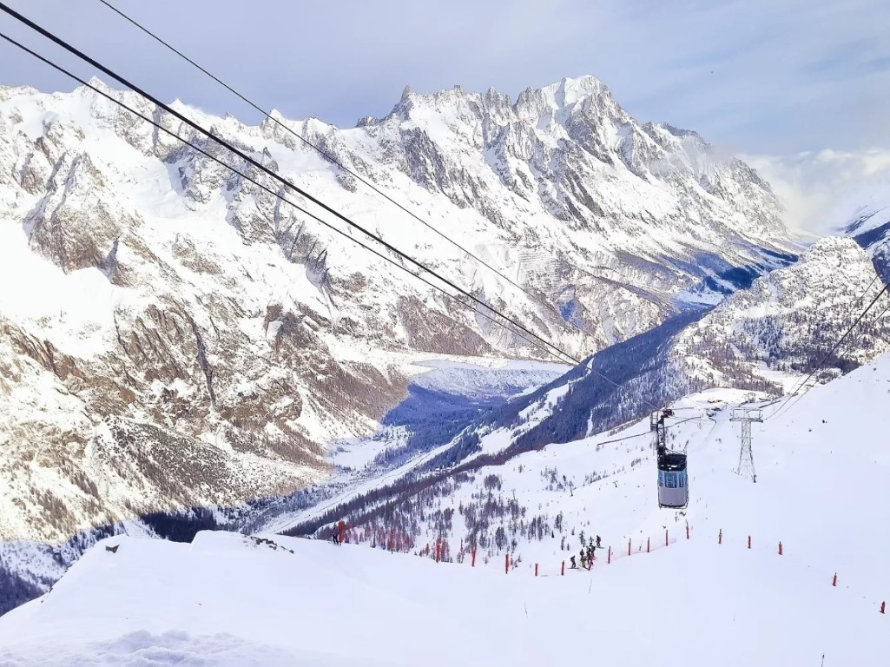
Localidad turística de fama internacional, Courmayeur, en Valle de Aosta, es conocida por la belleza de sus paisajes y por la hospitalidad de sus habitantes.
El antiguo pueblo ofrece un ambiente alpino auténtico, que se respira tanto paseando por sus tiendas de la céntrica calle Roma como por sus rincones más escondidos.
La localidad de Courmayeur (a 1.224 metros de altitud) surge en las laderas del Mont Blanc, en una cuenca verde rodeada de abetos y alerces, montañas, glaciales y bellísimos pueblecitos tradicionales a lo largo del curso del Dora Baltea, el río que atraviesa la localidad y todo Valle de Aosta.
Todo el pueblo destaca por su gran sentido de la hospitalidad y el cuidado de los mínimos detalles que desde siempre han distinguido y caracterizado sus numerosos alojamientos, desde el hotel a de lujo hasta el refugio alpino, pasando por sus históricos cafés del centro y albergues en las pistas. -
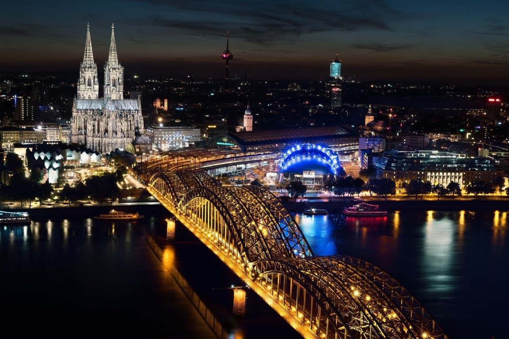
Lombardía, una tierra dinámica inmersa en el presente y proyectada hacia el futuro, con un extraordinario patrimonio artístico y natural.
Lombardía es una región del norte de Italia sobre todo conocida por su industria y sus finanzas, pero también por su arte y sus extraordinarios paisajes, empezando por los pintorescos lagos y sus montañas, Valcamonica y Valtellina. Capital y ciudad simbólica, Milán representa su corazón industrial que va de la mano de otras ciudades con un espíritu vibrante. -
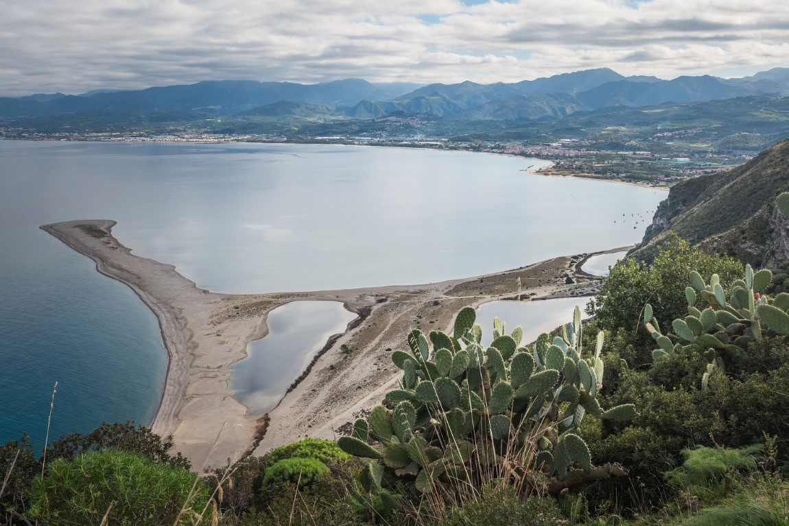
Sumergirse en Sicilia, donde un mar de arte, cultura, y naturaleza te seducirá y se convertirá en un amor eterno.
Una zona predominantemente montañosa que se gana el corazón de los turistas de todo el mundo con su maravilloso mar y sus ricas ciudades con encanto propio. Sicilia es una isla de postal caracterizada por las huellas imborrables de los pueblos que la han habitado y hecho única, entre testimonios artísticos y culturales de valor incalculable. -
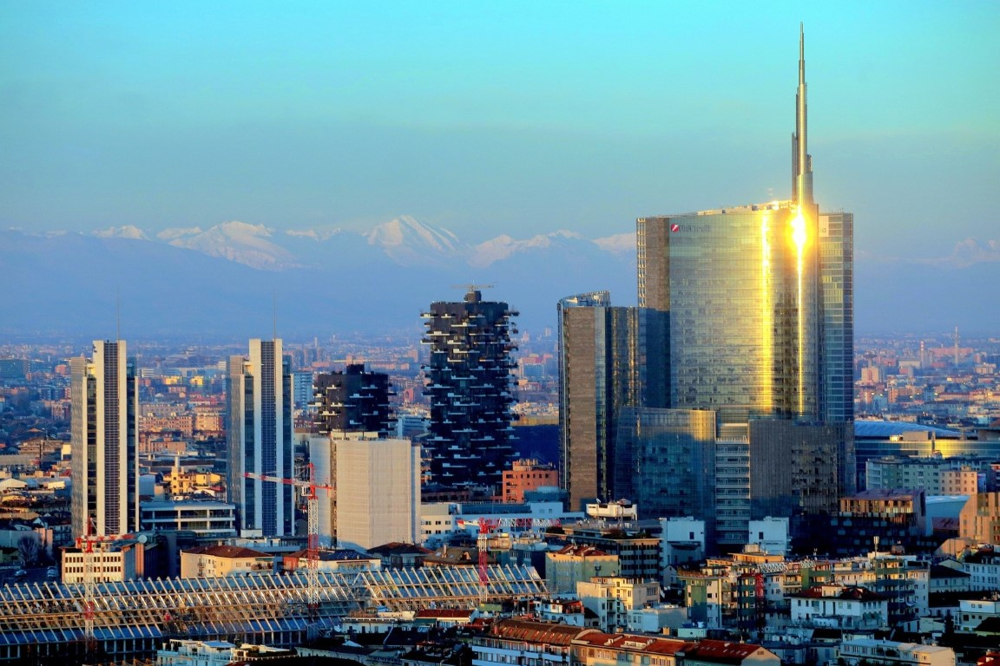
Milán, la metrópoli que se mueve en perfecto y dinámico equilibrio entre historia y modernidad.
Es considerada tanto una de las capitales mundiales de la moda y el diseño como un centro financiero. Sin embargo, Milán no olvida que también es una ciudad de cultura y pensamiento. Así, aunque siempre tiende a proyectarse hacia el futuro, la capital lombarda no olvida su importante historia, y le rinde homenaje con museos del más alto nivel e iglesias que se encuentran entre las más monumentales de Italia. -
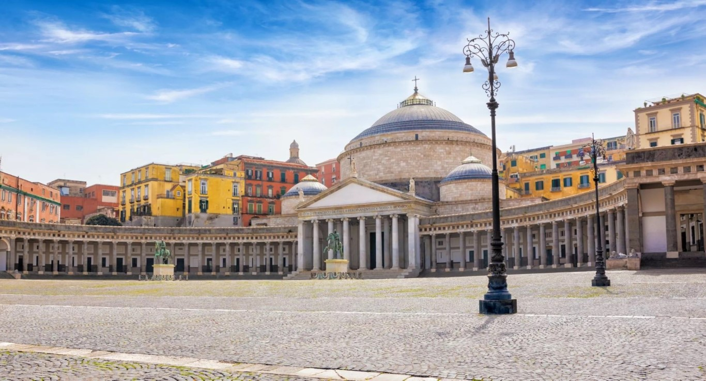
Desde el encanto del paseo marítimo, con el Vesubio asomando, hasta el centro histórico repleto de vida y de belleza.
Nápoles es una ciudad abrumadora. El hecho de haber sido el lugar de encuentro de diversos pueblos la ha marcado profundamente, desde la más remota antigüedad, haciendo de Nápoles una fuente de cultura. Basta con pasear por sus calles, llenas de tesoros artísticos y arquitectónicos, para darse cuenta de ello. Es una ciudad con una magia única, que incluye atractivos naturales. Desde la cocina hasta el entretenimiento y los estímulos de todo tipo: es imposible aburrirse. -
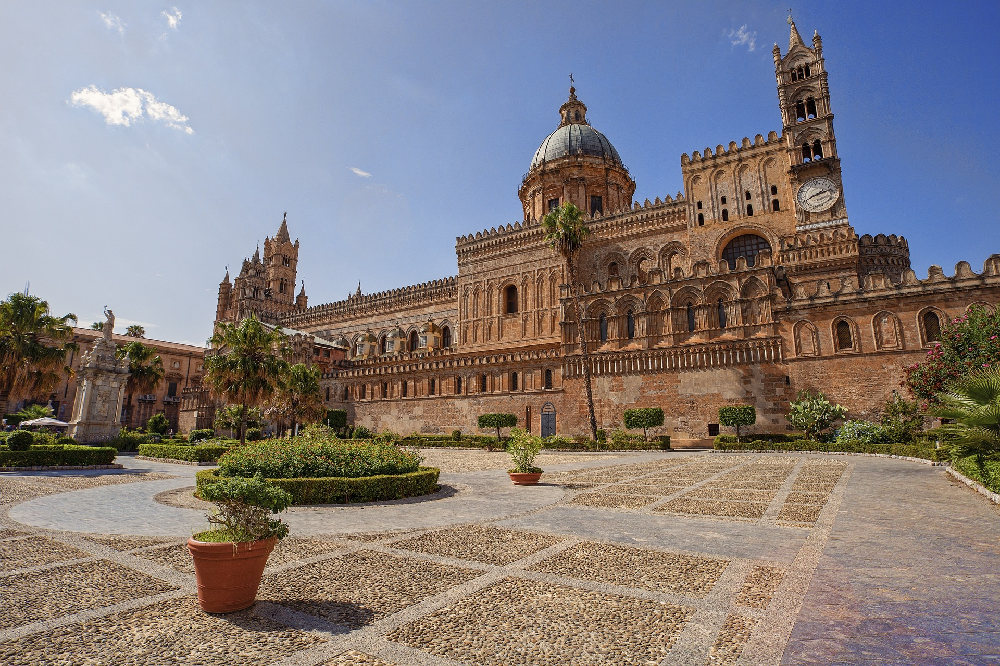
Capital siciliana y cruce de culturas y tradiciones, Palermo te enamorará, embriagándote con colores, aromas y sabores.
Palermo es una ciudad repleta de iglesias, monumentos y obras artísticas de valor incalculable, animada por ruidosos barrios populares que colindan con suntuosos edificios aristocráticos. La guinda del pastel la ponen un clima indulgente todo el año, un mar increíblemente bello y una tradición culinaria irresistible. -
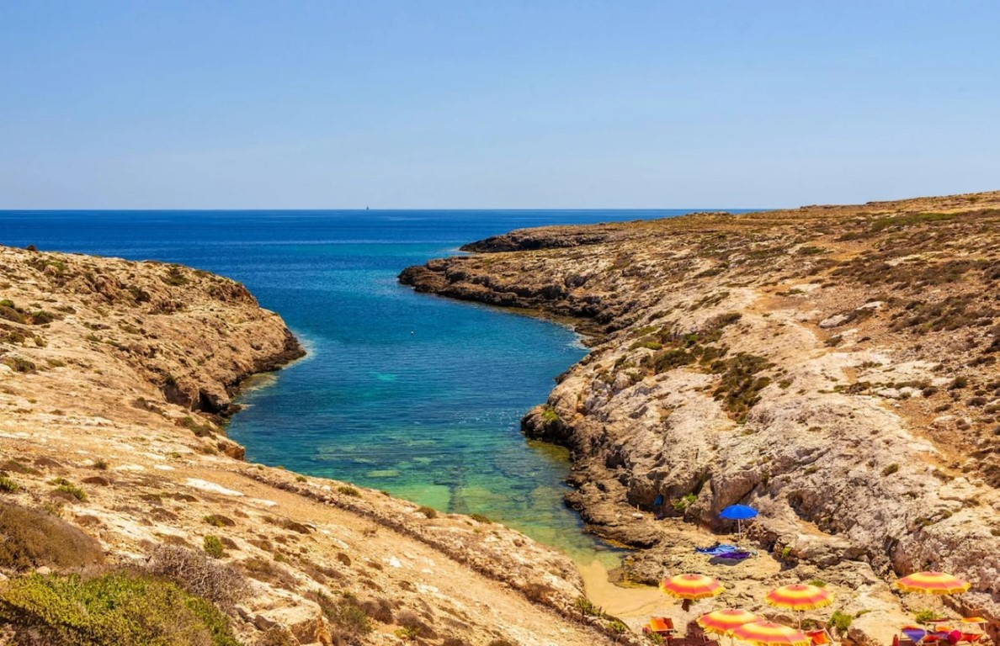
Es una de los destinos más deseados por los amantes del sol, las inmersiones submarinas y la naturaleza pura: así es Lampedusa, último rincón de territorio italiano antes de la costa africana.
Magnífica isla situada al sur de Sicilia, Lampedusa forma, junto a la isla de Linosa y al escollo de Lampione, el archipiélago de las Pelagias (es decir, “isla del alto mar” según la mitología griega). Tierra de frontera entre dos mundos, Lampedusa encierra características ambientales de dos continentes bien distintos: África y Europa. Basta pensar que se encuentra a 210 km de las costas sicilianas y tan sólo a 152 km de las africanas.